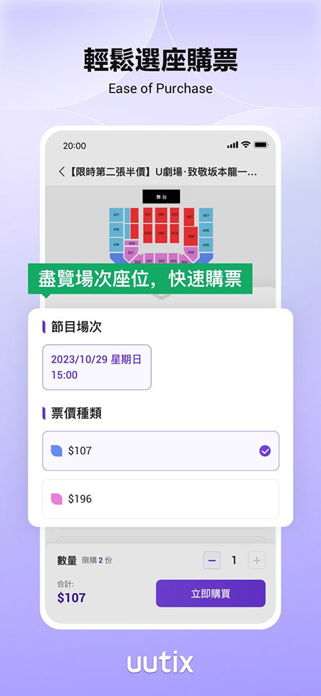

uutix 版本进化史：从一张空白票根到跨境观演的主入口
作为猫眼旗下专攻港澳和东南亚华人市场的购票平台，uutix 用了短短几个版本就站稳了跨境观演的洼地。我们从产品迭代的角度复盘它的成长逻辑。
现在这版：一个"不做大陆也不做欧美"的平台还能活得这么好？
我第一次下载 uutix下载 的时候是去年底帮朋友抢周杰伦澳门场。那时候我对这个 App 没什么概念——既不是大麦也不是猫眼主站，图标看起来有点像一个没做完的产品。结果随便点进去、填了观演人、用支付宝付完款，票就拿到了。整个过程没排队、没转圈、没让我等半小时重试。
这种体验跟我在大麦上抢同一场的经历形成了鲜明对比——那边排队界面转圈转到我以为手机卡了。
后来我才意识到，这不是运气好，而是 uutix 从一开始就选了一个聪明的位置。它不做大陆市场（那是大麦和猫眼的主场），也不做欧美市场（Ticketmaster 覆盖），就专攻港澳和东南亚的华人观演圈。去 uutix官网 看一眼就会发现，这个定位在它的每一个版本里都没有动摇过——从最早的骨架版本到现在的完整形态，你找不到它试图去跟大麦抢大陆用户的迹象，也看不到它想挤进欧美的野心。

它从哪起步：一个只有票务基础功能的壳
样本文档里没有给出具体的版本号或发布日期，但从文档覆盖的功能范围和描述方式，我能大致推断出它最早的几个版本是什么样的。
最早的 uutix 应该是一个"能买票就行"的极简版本——演出列表、详情页、选座、支付、电子票，这五步走完就算完成了。没有收藏功能、没有演出提醒、没有多语言切换，甚至连观演人信息填写可能都是在支付那一刻才弹出来的。
这个判断来自两个细节：第一，样本文档里说"注册完账号后，浏览演出、收藏、设提醒等操作都不需要实名"——收藏和提醒被单独列出来说明这些功能是后来加的，不是第一天就有的；第二，它的实名认证逻辑本身就是延迟到支付环节才触发的，而不是注册时就要求填，这也是早期产品最常见的做法——先让你逛，等你真要付钱了再拦你。
关键转折点：什么时候它从"壳"变成了"平台"
有三个标志性的变化让 uutix 从一个购票工具成长为跨境观演的主入口。
第一个转折点是多语言和多支付的同时上线。简体中文、繁体中文、英文一键切换，加上 Visa/Mastercard、支付宝、微信支付三种主流支付方式的同时支持——这不是一个"先做好中文用户再说"的渐进策略，而是第一天就把跨境需要的基础设施铺齐。你想想，一个内地用户去抢香港的票，用支付宝付；一个港澳用户去抢新加坡的票，用 Visa 付；一个马来西亚华人去抢马来西亚的华语演出，切换到繁体中文用微信支付——这三种场景在同一个 App 里无缝衔接。
第二个转折点是实名认证和电子票体系的落地。实名制在票务圈不是新鲜事，但 uutix 把这件事做得比很多老牌平台都清爽——观演人信息在购票时填写，每张票对应一个观演人，证件支持大陆身份证、港澳通行证、护照，入场核验时扫码加抽查。这套流程上线之后，黄牛的空间基本被压缩了，真实用户的安全感上来了，平台的"洼地效应"才真正开始起作用。
第三个转折点是退款政策的明确化。早期的购票平台往往对退款这件事遮遮掩掩，uutix 反而是把规则写得清清楚楚：退不退由主办方定、App 内能退的直接给入口、不能退的联系客服、演出取消的全额原路退回。这套透明化做法虽然不能让退票变容易，但至少让用户在买票之前就知道边界在哪，不至于演出取消了还在扯皮。
从迭代节奏看团队一直在死磕什么
我去 uutix文档 翻了一下几个章节，有一个很明显的规律：uutix 把最多的精力放在了"降低跨境购票的摩擦"上，而不是"增加花哨的功能"。
他们一直在死磕的三件事：
- 支付不卡壳：三种主流支付方式全部覆盖，信用卡退款到账时间专门列了一张表（7-30 工作日），说明他们自己也清楚跨境信用卡的痛点在哪里，提前给用户打预防针。
- 入场不翻车：电子票的 QR 码刷新机制、场馆信号屏蔽的提醒、电量建议、证件核对的注意事项——这些细节在文档里写得比很多本地购票平台都细，显然是踩过坑之后补的。
- 信息不对称的消除：观演人填错了能不能改？大陆身份证能不能买港澳票？扫码失败怎么办？这些问题在样本文档里都有专门的章节，甚至还列出了"极少""绝大多数""部分"这样的概率描述——这不是套模板写的文档，是从真实客服问题里沉淀下来的。
反过来看，他们一直不管的事：社区、评论、演出评价、用户之间的社交互动、推荐算法。直到现在样本文档里都没有提到任何让用户互相交流的功能。这说明团队的优先级非常清晰——先把"跨境买票不翻车"这件事做到位，其他的以后再说。
照这个路线，下一步大概率会怎么走
我得先声明，这只是从迭代规律推的，不是官方口径。
第一，多币种和本地化支付应该会跟上。现在只有人民币和港币相关的支付方式，东南亚本地用户用当地货币购票还要走汇率换算，体验不够好。如果他们真的想把东南亚市场做深，这一步绕不过去。
第二，演出提醒和订阅机制肯定会继续加强。样本文档里提到了"设提醒"但没展开具体怎么设，说明功能还在比较基础的阶段。热门演出开售前的推送、艺人关注、场馆订阅——这些都是跨境用户的刚需，因为很多人是从微博或小红书看到演出信息的，自己记不住时间。
第三，跨场次转赠可能会松绑。现在转赠是"代替退款"的补充方式，但限制比较多。如果平台想进一步降低用户的购票犹豫度，转赠规则的弹性空间还很大。
但我也看到了一个风险：洼地效应不会永远持续。现在用户觉得 uutix 好抢票，核心原因是用户池还不够大。一旦平台做大，热门演出的排队人数也会上来，到时候跟大麦的差别就只剩下"多语言和多支付"了——而这两个差异化点，大麦和猫眼随时可以抄。
所以 uutix 真正的护城河可能不在技术或功能上，而在它是不是愿意一直守着"跨境华人观演圈"这个窄定位。如果它哪天想扩展到大陆本地市场或者欧美市场，那反而会稀释自己的差异化优势。